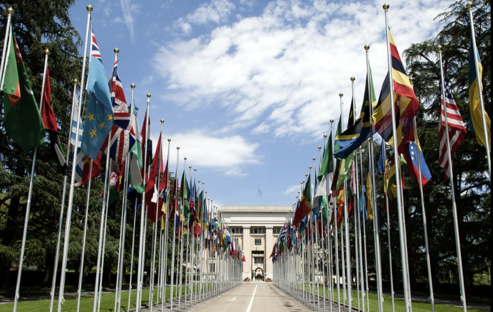
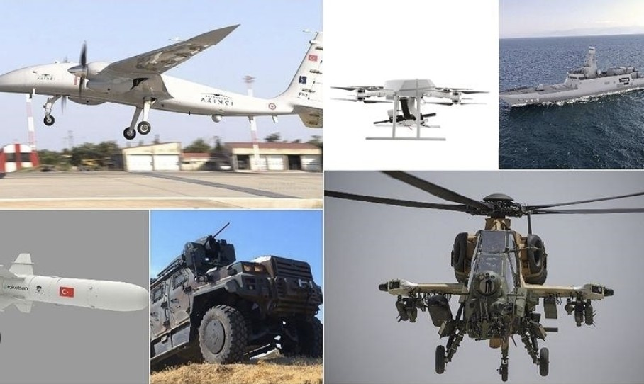
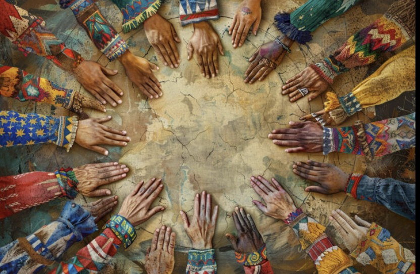

Vizyon & İlgi Alanlarım

Stratejik Vizyon: Küresel Analiz
Bölgesel ve küresel sorunları yakından takip etmek, benim için bir hobi değil, dünyayı anlama biçimidir. Uluslararası ilişkiler disiplinine olan ilgimle, jeopolitik gelişmeleri ve güç dengelerini analiz ederek olaylara stratejik bir perspektiften bakıyorum.

Savunma Sanayii ve Teknolojik Gelişmeler
Bir mühendislik öğrencisi olarak, teknolojinin stratejik güçle birleştiği savunma sanayii alanını çok yakından takip ediyorum. Özellikle milli teknoloji hamlelerini, İHA/SİHA sistemlerini ve geleceğin savunma teknolojilerini incelemek teknik merakımın merkezinde yer alıyor.

Kültürel Derinlik ve Kitap Araştırmaları
Farklı dinlerin tarihsel süreçlerini ve kültürlerin sosyolojik yapılarını araştırmak, benim entelektüel dünyamı besleyen en önemli unsurlar. Kitaplar aracılığıyla farklı medeniyetlerin izini sürmek ve evrensel bir kültürel bakış açısı kazanmak temel önceliğim.